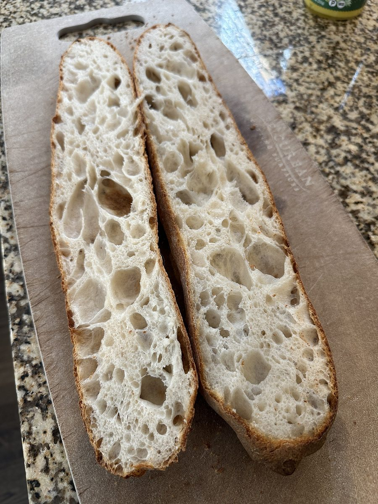
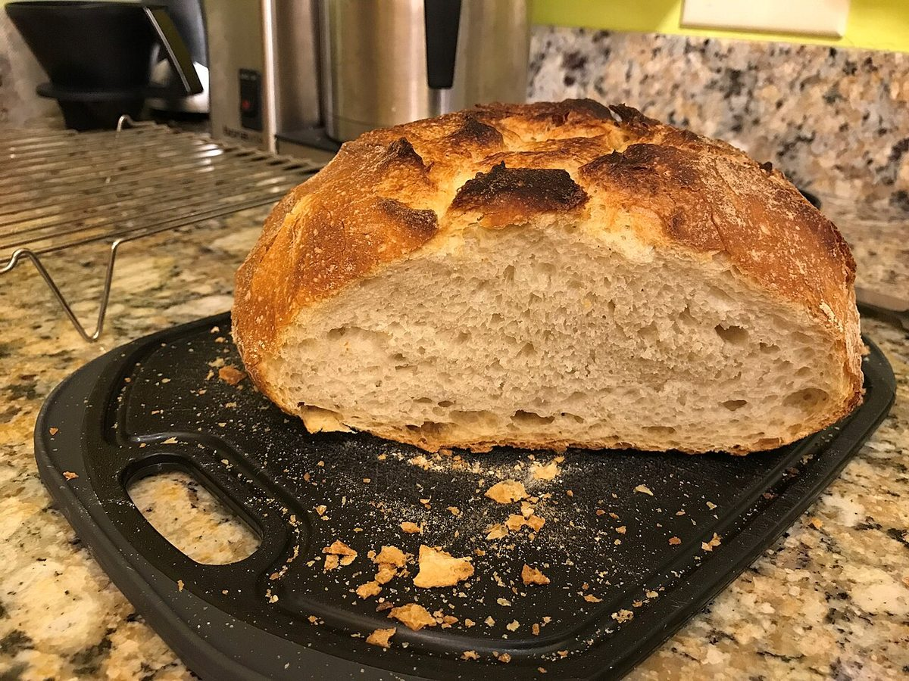
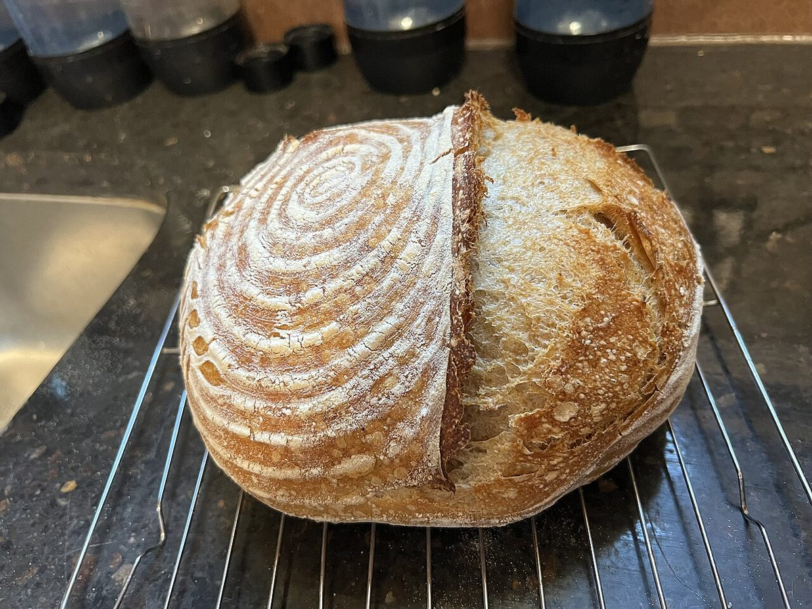
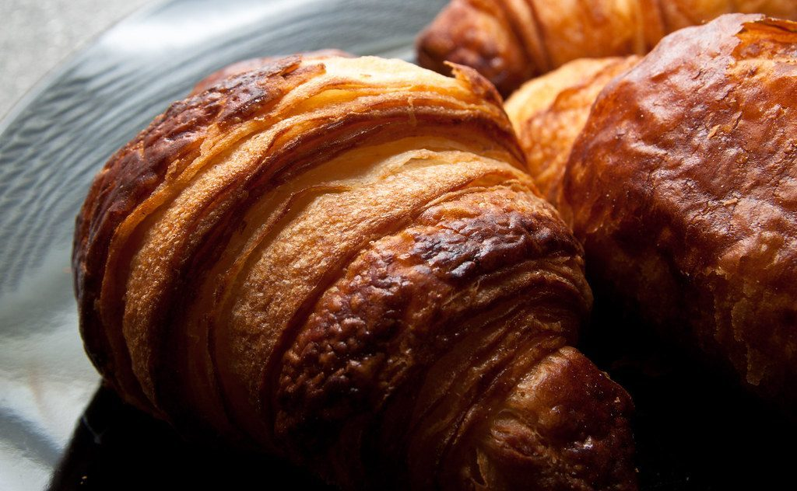

店のこと
店のこと
お店について確認できているのは、所在地・電話番号・Instagramのアカウントだけです。
このページの「想像してみる」部分は、制作側が想像して書いたものです。お店の実際の様子・考え・商品とは関係がありません。
確認できていること
- 店名は「パン屋 カトルカール」、業種はベーカリー
- 所在地は栃木県宇都宮市白沢町341-2(〒329-1102)
- 電話番号は 028-307-9834
- Instagramのアカウントは @quatre_quart
- 営業時間・定休日・メニュー・価格・ご予約・駐車場は準備中
想像してみる
回る木馬に、もう4つ番号札を。
「カトルカール」という響きに、制作側は木馬の乗り場の呼び出しを重ねてみました。実際のお店の考えとは関係のない、制作側の遊びです。お店の方のお話を伺えれば、この部分を本当の言葉に差し替えます。
- 1

割ったパンの断面(イメージ) 1番 断面
- 2

半分に切ったパン(イメージ) 2番 半分
- 3

渦の跡が付いたパン(イメージ) 3番 渦の跡
- 4

焼き色の濃い三日月形のパン(イメージ) 4番 焼き色